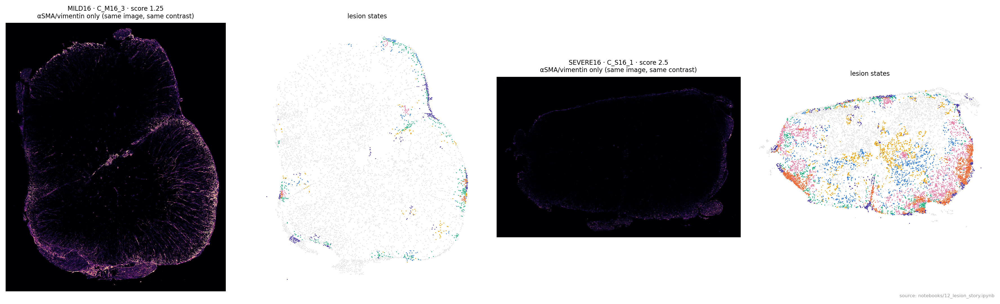

How EAE lesions form, resolve or persist — and what the segmentation stains add
Lesions run from an active infiltrate to a fibrotic, demyelinated state and largely resolve. In animals that do well, lesions fill with vimentin-bright reactive astrocytes, which only the images can see. Severe chronic animals keep active lesions without it, and relapse-prone animals accumulate meningeal B-cell aggregates.
- Lesions redefined. Against control tissue, never-immunised animals come out ~1 % lesion, down from 4–20 % with the curated labels. The lesion share falls from 0.93 at the first peak to 0.14 in long remission.
- Six lesion states: active monocyte-derived (S1, S4) at every peak; fibrotic / myelin-loss (S2) and glial-reactive (S0, S3) later; lymphocytic infiltrate (S5) throughout.
- Vimentin (Vim is not on the panel): lesion astrocytes carry more vimentin in milder / resolving disease in every contrast. It is the strongest correlate of chronic severity (ρ = −0.80). It survives batch, brightness, focus and αSMA controls. It fills the lesion interior (no ring at the edge): low at peak and strongest in mild and never-relapsing animals, so it marks a lesion-wide resolution response. Whether it contains infiltration could not be shown either way.
- Chronic severity is set at the first attack (all SEVERE peaked at 3.5) and means lesions that stayed active, not more neuropil loss.
- Relapse can't be predicted clinically. B cells accumulate after the first attack and move into meningeal aggregates (fewer in never-relapsing animals). Relapses are mostly new lesions, with some flaring at old borders.
- Earlier image findings replicate in runs 1–3: white-matter neuropil loss, astrocyte RNA-before-vimentin, T cells facing vessels, image models on unseen runs. The 18S texture marker replicates only partly.

1Lesions redefined, six lesion states
Each cell's 30-cell neighbourhood (cell-type mix, seven disease programs, cellularity) is compared with control animals of the same region (white matter, grey matter, meninges). It counts as lesion when it lies outside the control range, calibrated so held-out controls are ~1 % lesion. 72 % of cells labelled "Lesion_mix" look like normal tissue.


2Vimentin marks milder and resolving lesions



Technical or αSMA? Every alternative tested (notebook 15)
The effect keeps its direction in all four contrasts within animals, far from vessels, with no VSMC, endothelial or fibroblast cell within 20 µm, in deep white matter, in reactive astrocytes only, and within lesion states. Controls stay near zero: DAPI, neurons and oligodendrocytes, focus, and smooth-muscle / pericyte / fibroblast RNA in the astrocytes. A VSMC calibrator flags some channel-brightness contribution in MILD16 vs SEVERE16 and chronic vs RR; the within-animal contrast removes it.


3Does a vimentin scar contain lesions?
A collaborator's hypothesis: a successful astrocyte scar restricts immune infiltration. With lesion regions (smoothed lesion-cell density, 356 regions in 53 animals, real outlines, depth from the cord outline), lesions with more border vimentin have neither fewer nor more immune cells around them than other lesions of the same animal (median ρ 0.00, p = 0.65; deep regions ρ −0.39, n.s.). Where vimentin is bright it fills the lesion rather than lining it. A first analysis with cell-linkage objects suggested the opposite; its objects were diffuse scatters without real outlines, so it is withdrawn. Testing restriction needs time-resolved data or an intervention on astrocyte reactivity.

4Chronic severity: lesions that stayed active
Severe chronic animals still carry more lesion (0.52 vs 0.28), active monocyte-derived states, T cells and dense infiltrates at d28–41, and fewer myelinating oligodendrocytes (0.08 vs 0.15 per WM cell); neuropil is not lost more. Across 13 chronic-late animals the strongest correlate of the score is low lesion vimentin (ρ = −0.80), then lesion share (0.58) and T cells (0.47).

5Relapse: B cells, and new vs reactivated lesions
B cells per 1000 cells: RR PEAK1 14 → REMISSION1 22 → PEAK2_MILD 25; aggregated share 0.26 → 0.55; meningeal share 0.16 → 0.58–0.90. Never-relapsing animals: 9 vs 22 (p = 0.03), deeper first recovery, more lesion vimentin. Chronic arm ≤ 8 throughout.


Relapse is mostly new lesions, plus flaring at old borders. Active tissue at relapse touches old fibrotic tissue more than at the first attack (0.23 vs 0.05 within 50 µm, p = 4e-4). Relapse animals have more separate lesions (17 vs 8), and only 19 % of active relapse tissue is in lesions that contain old tissue. B-cell aggregates sit near old lesions at relapse (0.72 vs 0.31).

6Replication, damage memory, caveats
| Earlier image finding | Runs 1–3 |
|---|---|
| White-matter neuropil loss in lesions | replicated: ×0.72 (58 pieces, p < 1e-4) vs ×0.79 |
| Astrocyte reactive RNA before vimentin protein | replicated: ρ 0.51–0.58 per run; RNA-only astrocytes more common in active disease |
| T cells orient 18S-rich cytoplasm towards vessels | replicated: cos 0.19 (33 animals) vs 0.14 |
| Image-only models on an unseen run | yes, every run: lesion AUROC 0.85–0.91, cell type 0.42–0.47 |
| 18S texture severity marker | partly: astrocytes, myeloid, oligodendrocytes only |
Damage memory. Within the same lesion state, neuropil trends back towards normal from peak to recovery while vimentin rises (19 vs 13 animals; best q = 0.13). Persisting lesions look repaired in neuropil but scarred in vimentin.
Caveats
- Small groups (2–19 animals): the evidence is consistency across independent contrasts, not single p values.
- The arms differ in antigen, likely strain, and run. MILD30 is run 1 only. MONOPHASIC and REMISSION1 never share an image.
- Lesion calls and states come from the transcriptome; the image readouts are independent of them.
- Cross-sectional design: "builds", "precedes" and "resolves" are inferred from animals sacrificed at different times.
Next
- Validate vimentin vs αSMA with separate antibodies on a few MILD/SEVERE and MONOPHASIC/REMISSION1 sections.
- Order events along the active → fibrotic trajectory (when neuropil, vimentin and 18S change).
- Time-resolved or interventional test of whether the vimentin border restricts infiltration.